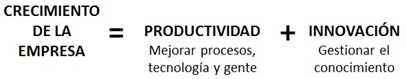

Esta fórmula apareció en una presentación a la que asistí hace unos años y me pareció muy acertada, además de representar en sí misma una excelente forma de ilustrar el enfoque que deben tener las PYMES sobre todo en sus primeros años para asegurar la sostenibilidad y la subsistencia en el mundo empresarial de hoy.
Quiero hacer énfasis en lo siguiente: la productividad y la innovación son prácticas especialmente críticas “para las PYMES” y sobre todo “en sus primeros años”, ¿Por qué? Porque generalmente la PYME compite en un entorno muy hostil y muy dinámico donde la capacidad de aprovechar mejor los recursos y ser más rápido que sus competidores es la única manera de hacer buenos negocios, además hay que aprender, ser flexibles y adaptarse a los cambios sin traumas.
Muchas veces he escuchado esto de aprovechar los recursos, ser más rápido, aprender, adaptarse, “golpear primero”, etc. ¿pero como se hace? revisemos brevemente el concepto de productividad y de innovación aplicada a las PYMES y a nuestro entorno.
Al hablar de productividad nos referimos a la capacidad que tiene una empresa para producir los bienes o servicios que comercializa; esa capacidad depende básicamente de la eficiencia de los procesos, la madurez de su tecnología y la habilidad de su gente para ejecutar sus funciones.
Para lograr eficiencia la empresa debe tener claramente definidos sus procesos, conocer en detalle sus métricas e implementar un sistema de gestión que permita monitorearlos para detectar a tiempo oportunidades de mejora, cuellos de botella o para adaptarse a cambios del entorno, los sistemas para modelado de procesos de negocio (BPMS por sus siglas en inglés) son una buena alternativa ya que ofrecen herramientas para definir, ejecutar, monitorear y optimizar los procesos.
Por su parte la madurez tecnológica implica el uso adecuado de los sistemas, metodologías y equipos que posee la empresa según su modelo de negocio y su estrategia; no necesariamente esto implica tener tecnología de punta, sí bien esta pareciera aumentar la productividad, a veces el costo de poseerla y sub-utilizarla puede ser más alto que los beneficios recibidos, es recomendable tener una estrategia para reducir el impacto monetario de poseer (o no poseer) la tecnología actual y optimizar el costo total de propiedad (T.C.O. por sus siglas en inglés).
Tener personal competente facilita mucho estas prácticas, de ninguna manera estamos sugiriendo la contratación de genios con MBA, hablamos de personas a las cuales se les capacita, se les hace competentes para ejecutar eficientemente sus funciones, esto tampoco implica hacer grandes inversiones en cursos de mejoramiento profesional, implica tener una estrategia de capital humano, que comienza con un adecuado y efectivo proceso de selección y contratación, hasta un plan de desarrollo de competencias, pasando por un bien diseñado y enfocado proceso de inducción y capacitación inicial apoyado en buena documentación y buenos facilitadores.
La combinación de estas prácticas: Un sistema de gestión de procesos, tecnología adecuada y bien usada y formación de personal competente no es tampoco garantía de éxito rotundo, pero facilita el desarrollo de nuestros negocios por pequeños que sean y, particularmente en las edades tempranas de nuestras empresas ayudará a alinear todas las piezas y mantenerlas cohesionadas durante estas etapas de consolidación y crecimiento.
Por otra parte las PYMES tienen la necesidad de innovar, esto no es algo exclusivo de los líderes mundiales cómo Apple, Google, etc. La innovación debe ser parte de nuestro ADN para ser competitivos; gigantes como los que mencionamos antes hay pocos, pero PYMEs que hagan productos parecidos a los nuestros y que puedan quitarnos mercado hay muchos más de los que imaginamos, por eso hay que conseguir alguna forma de diferenciarnos, esto lo lograremos produciendo innovación.
Si seguimos los pasos del número uno siempre seremos el número dos; debemos diferenciarnos, hallar nuestra verdadera ventaja competitiva, esa que es inigualable, y explotarla, convertirla en un factor crítico de éxito y desarrollar nuestra propuesta de valor enfocada en ese elemento.
Pero, ¿cómo hallar ese elemento diferenciador? con un sistema de gestión del conocimiento. La innovación no se produce por un chispazo como un big bang, es el resultado de aprendizaje, investigación, ensayo y error, documentación y mucho enfoque en el objetivo.
Existen herramientas para capturar, validar, difundir y reutilizar el conocimiento en nuestras empresas sin necesidad de hacer grandes inversiones, sólo se necesita tiempo, compromiso y una metodología de aprendizaje organizacional permanente.
Hacer crecer a una empresa, sobre todo en etapas tempranas, no es tarea fácil; se necesitan fórmulas que nos guíen para enfocarnos y aprovechar al máximo nuestros recursos y las oportunidades del entorno.
Esta fórmula que presentamos en esta oportunidad es muy sencilla, pero al mismo tiempo muy completa, una PYME que mejore permanentemente sus procesos, su tecnología y su gente buscando diferenciarse de la competencia, generando propuestas de valor distintas, atrevidas e innovadoras está destinada a ser una “gran empresa” sin ser necesariamente una “empresa grande”.
Así que no perdamos de vista y apliquemos la ecuación:

Con la asesoría adecuada, se pueden implementar estos modelos, si desea ampliar esta información o alguna ayuda particular en este sentido, puede ponerse en contacto con nosotros al email sgcvzla@gmail.com o al celular (+58)414-4802725
Luis Rodríguez
Director General - SGC Consultores C.A.